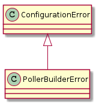
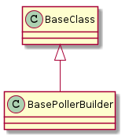
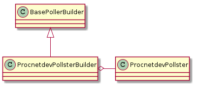
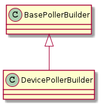
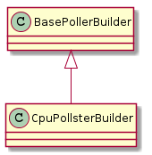

Poller Builders
A module to build device pollers.
The Poller Builder Error

The Base Poller Builder

BasePollerBuilder |
|
BasePollerBuilder.name |
|
BasePollerBuilder.use_header |
|
BasePollerBuilder.subdir |
|
BasePollerBuilder.filename |
|
BasePollerBuilder.output_file |
|
BasePollerBuilder.interval |
|
The Proc Net Dev Pollster Builder

ProcnetdevPollsterBuilder |
|
ProcnetdevPollsterBuilder.product |
|
The Device Poller Builder

DevicePollerBuilder |
|
DevicePollerBuilder.product |
|
The CPU Pollster Builder

CpuPollsterBuilder |
|
CpuPollsterBuilder.product |
|